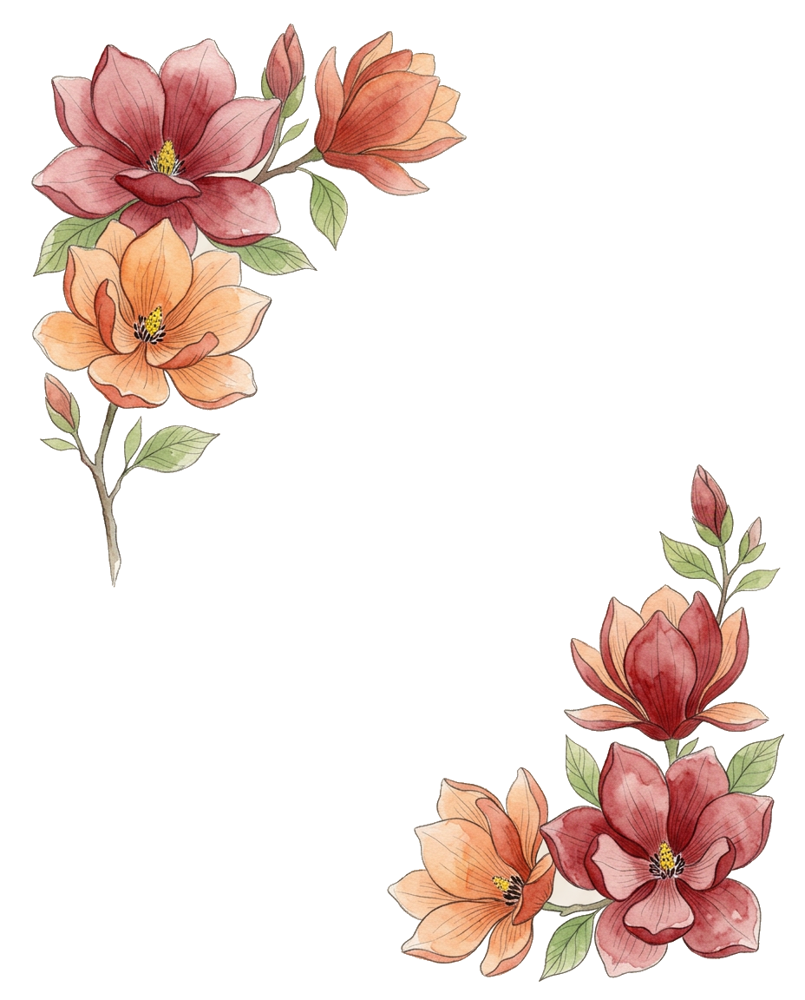
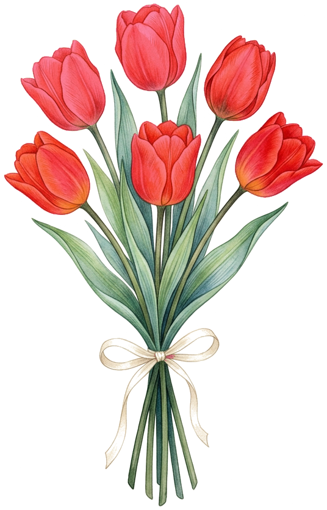

<!doctype html><html><head><meta charset="utf-8">
<style>
@font-face{font-family:"Apple";src:url("fonts/homemade-apple.ttf")}
@font-face{font-family:"Caslon";src:url("../site/assets/fonts/LibreCaslonText-Regular.ttf")}
body{margin:0;background:#333}
.post{width:1080px;height:1350px;position:relative;overflow:hidden;margin:0 0 20px;background:#EADCC5}
.post svg{position:absolute;inset:0}
.carta{position:absolute;left:-90px;top:-60px;width:1300px;font-family:"Apple";font-size:30px;line-height:64px;color:#4A3A2E;opacity:.42;transform:rotate(-4deg)}
.flor{position:absolute;filter:drop-shadow(0 8px 12px rgba(40,15,10,.32))}
.etiqueta{position:absolute;text-align:center;color:#3B2A20}
.etiqueta span{position:relative}
</style></head><body>
<script>
const DEFS = (id,c) => `<defs>
  <!-- flor jacobina -->
  <g id="${id}-flor">
    <path d="M-8,-2 C-30,-4 -40,-22 -30,-36 C-24,-44 -16,-40 -14,-34 C-12,-46 -4,-52 0,-44 C4,-52 12,-46 14,-34 C16,-40 24,-44 30,-36 C40,-22 30,-4 8,-2 Z" class="f2"/>
    <path d="M0,-6 L-21,-30 M0,-6 L-7,-40 M0,-6 L7,-40 M0,-6 L21,-30" class="ln"/>
    <path d="M-22,-14 Q-15,-21 -8,-14 Q-1,-21 6,-14 Q13,-21 20,-14" class="ln"/>
    <circle cx="-14" cy="-26" r="1.6" class="dt"/><circle cx="0" cy="-30" r="1.6" class="dt"/><circle cx="14" cy="-26" r="1.6" class="dt"/>
    <path d="M-14,22 C-20,10 -16,0 -8,-2 L8,-2 C16,0 20,10 14,22 C6,28 -6,28 -14,22 Z" class="f1"/>
    <path d="M-13,8 Q0,14 13,8 M-12,15 Q0,21 12,15" class="ln"/>
    <circle cx="-6" cy="4" r="1.4" class="dt"/><circle cx="0" cy="5" r="1.4" class="dt"/><circle cx="6" cy="4" r="1.4" class="dt"/>
    <path d="M0,26 L0,44" class="ln"/>
  </g>
  <g id="${id}-folha">
    <path d="M0,0 C8,-10 26,-10 36,0 C26,10 8,10 0,0 Z" class="f1"/>
    <path d="M2,0 L32,0 M10,0 L14,-5 M17,0 L21,-5 M24,0 L27,-4 M10,0 L14,5 M17,0 L21,5 M24,0 L27,4" class="ln"/>
  </g>
  <g id="${id}-ramo">
    <path d="M4,26 C30,32 54,12 62,-14 C68,-34 58,-50 46,-48 C36,-46 36,-34 44,-32" class="vn"/>
    <path d="M2,34 C10,58 40,72 64,66 C80,62 84,46 74,42 C66,40 64,50 70,52" class="vn"/>
    <use href="#${id}-folha" transform="translate(30,30) rotate(-28) scale(.8)"/>
    <use href="#${id}-folha" transform="translate(58,-4) rotate(-80) scale(.7)"/>
    <use href="#${id}-folha" transform="translate(24,52) rotate(40) scale(.75)"/>
    <circle cx="50" cy="16" r="1.6" class="dt"/><circle cx="44" cy="24" r="1.6" class="dt"/><circle cx="54" cy="8" r="1.6" class="dt"/>
    <circle cx="48" cy="72" r="1.5" class="dt"/><circle cx="56" cy="72" r="1.5" class="dt"/>
  </g>
  <g id="${id}-roseta">
    <g class="f2">
      <path d="M0,0 C-6,-6 -5,-14 0,-14 C5,-14 6,-6 0,0 Z"/>
      <path d="M0,0 C-6,-6 -5,-14 0,-14 C5,-14 6,-6 0,0 Z" transform="rotate(72)"/>
      <path d="M0,0 C-6,-6 -5,-14 0,-14 C5,-14 6,-6 0,0 Z" transform="rotate(144)"/>
      <path d="M0,0 C-6,-6 -5,-14 0,-14 C5,-14 6,-6 0,0 Z" transform="rotate(216)"/>
      <path d="M0,0 C-6,-6 -5,-14 0,-14 C5,-14 6,-6 0,0 Z" transform="rotate(288)"/>
    </g>
    <circle r="3.4" class="f1"/><circle r="1.2" class="dt"/>
    <use href="#${id}-folha" transform="rotate(36) translate(13,0) scale(.42)"/>
    <use href="#${id}-folha" transform="rotate(108) translate(13,0) scale(.42)"/>
    <use href="#${id}-folha" transform="rotate(180) translate(13,0) scale(.42)"/>
    <use href="#${id}-folha" transform="rotate(252) translate(13,0) scale(.42)"/>
    <use href="#${id}-folha" transform="rotate(324) translate(13,0) scale(.42)"/>
  </g>
  <g id="${id}-motivo">
    <use href="#${id}-ramo"/><use href="#${id}-ramo" transform="scale(-1,1)"/>
    <use href="#${id}-flor"/>
  </g>
  <pattern id="${id}-papel" width="216" height="276" patternUnits="userSpaceOnUse">
    <use href="#${id}-motivo" x="108" y="138"/>
    <use href="#${id}-motivo" x="0" y="0"/><use href="#${id}-motivo" x="216" y="0"/>
    <use href="#${id}-motivo" x="0" y="276"/><use href="#${id}-motivo" x="216" y="276"/>
    <use href="#${id}-roseta" x="0" y="138"/><use href="#${id}-roseta" x="216" y="138"/>
    <use href="#${id}-roseta" x="108" y="0"/><use href="#${id}-roseta" x="108" y="276"/>
    <circle cx="54" cy="69" r="1.8" class="dt"/><circle cx="162" cy="69" r="1.8" class="dt"/>
    <circle cx="54" cy="207" r="1.8" class="dt"/><circle cx="162" cy="207" r="1.8" class="dt"/>
  </pattern>
  <pattern id="${id}-trama" width="9" height="9" patternUnits="userSpaceOnUse" patternTransform="rotate(45)">
    <path d="M0,0 L0,9 M0,0 L9,0" stroke="${c.trama}" stroke-width="1.3" opacity=".85"/>
  </pattern>
  <filter id="${id}-mancha" x="0" y="0" width="100%" height="100%">
    <feTurbulence type="fractalNoise" baseFrequency=".006" numOctaves="4" seed="7"/>
    <feColorMatrix values="0 0 0 0 .55  0 0 0 0 .40  0 0 0 0 .25  0 0 0 .55 -.18"/>
    <feComposite in2="SourceGraphic" operator="in"/>
  </filter>
  <filter id="${id}-sombra" x="-10%" y="-10%" width="120%" height="120%">
    <feDropShadow dx="6" dy="14" stdDeviation="14" flood-color="#3F1019" flood-opacity=".38"/>
  </filter>
  <filter id="${id}-dentro" x="0" y="0" width="100%" height="100%">
    <feFlood flood-color="#4b3a20" flood-opacity=".35"/>
    <feComposite in2="SourceAlpha" operator="out"/>
    <feGaussianBlur stdDeviation="7"/>
    <feOffset dx="2" dy="4"/>
    <feComposite in2="SourceAlpha" operator="in"/>
  </filter>
  <filter id="${id}-grao" x="0" y="0" width="100%" height="100%">
    <feTurbulence type="fractalNoise" baseFrequency=".85" numOctaves="2" seed="3"/>
    <feColorMatrix type="saturate" values="0"/>
    <feComponentTransfer><feFuncA type="linear" slope=".09"/></feComponentTransfer>
  </filter>
</defs>`;
function pinta(d, c){
  return d.replace(/class="f1"/g, `fill="${c.fill1}" stroke="${c.traco}" stroke-width="1.4"`)
          .replace(/class="f2"/g, `fill="${c.fill2}" stroke="${c.traco}" stroke-width="1.4"`)
          .replace(/class="ln"/g, `fill="none" stroke="${c.traco}" stroke-width="1.2" stroke-linecap="round"`)
          .replace(/class="vn"/g, `fill="none" stroke="${c.traco}" stroke-width="1.8" stroke-linecap="round"`)
          .replace(/class="dt"/g, `fill="${c.traco}"`);
}
// Recorte de papel com a borda irregular (sempre igual: sorteio com semente fixa).
let semente = 7;
const sorte = () => ((semente = (semente * 16807) % 2147483647) / 2147483647);
function rasgado(x, y, w, h, passo, mexe){
  const p = [];
  for (let i = 0; i <= w; i += passo) p.push([x + i, y + (sorte() - .5) * mexe]);
  for (let i = 0; i <= h; i += passo) p.push([x + w + (sorte() - .5) * mexe, y + i]);
  for (let i = w; i >= 0; i -= passo) p.push([x + i, y + h + (sorte() - .5) * mexe]);
  for (let i = h; i >= 0; i -= passo) p.push([x + (sorte() - .5) * mexe, y + i]);
  return p.map(q => q.map(v => v.toFixed(1)).join(",")).join(" ");
}
const CARTA = "Querida amiga, hoje acordei pensando em como Deus foi fiel em cada estação. Nos dias de sol e nos dias de chuva, Ele estava lá, cuidando de cada detalhe da nossa casa. Quando o coração apertou, Ele trouxe paz. Quando faltou força, Ele foi a minha força. Quando eu não entendia nada, Ele já sabia tudo. Por isso escrevo: não esqueça das bondades do Senhor. Elas se renovam a cada manhã, como o pão quentinho na mesa e as flores na janela. ";
const C = { fill1:"#7E2C38", fill2:"#8E3A44", traco:"#E7C3AE" };
const painel = rasgado(150, 318, 780, 720, 46, 30);
document.body.insertAdjacentHTML("beforeend", `
<div class="post" id="p1">
  <div class="carta">${(CARTA + CARTA + CARTA + CARTA).trim()}</div>
  <svg viewBox="0 0 1080 1350" width="1080" height="1350">${pinta(DEFS("p1", { trama:"#000" }), C)}
    <defs>
      <clipPath id="p1-corte"><polygon points="${painel}"/></clipPath>
      <filter id="p1-sombra" x="-10%" y="-10%" width="120%" height="120%"><feDropShadow dx="3" dy="10" stdDeviation="10" flood-color="#2a0f0a" flood-opacity=".35"/></filter>
      <filter id="p1-rasgo" x="-5%" y="-5%" width="110%" height="110%">
        <feTurbulence type="fractalNoise" baseFrequency=".08" numOctaves="2" seed="5" result="t"/>
        <feDisplacementMap in="SourceGraphic" in2="t" scale="8" xChannelSelector="R" yChannelSelector="G" result="d"/>
        <feDropShadow in="d" dx="2" dy="7" stdDeviation="7" flood-color="#2a0f0a" flood-opacity=".35"/>
      </filter>
      <filter id="p1-kraft" x="0" y="0" width="100%" height="100%">
        <feTurbulence type="fractalNoise" baseFrequency=".05" numOctaves="4" seed="11" result="n"/>
        <feColorMatrix in="n" type="matrix" values="0 0 0 0 .45  0 0 0 0 .33  0 0 0 0 .2  0 0 0 .3 0" result="m"/>
        <feComposite in="m" in2="SourceGraphic" operator="in"/>
      </filter>
    </defs>
    <g filter="url(#p1-sombra)"><polygon points="${painel}" fill="#F3E9DA" stroke="#F3E9DA" stroke-width="16" stroke-linejoin="round"/></g>
    <g clip-path="url(#p1-corte)">
      <rect x="140" y="300" width="800" height="760" fill="#6B1F2C"/>
      <g transform="scale(1.15)"><rect x="100" y="250" width="740" height="700" fill="url(#p1-papel)"/></g>
      <rect x="140" y="300" width="800" height="760" fill="#000" filter="url(#p1-kraft)" opacity=".6"/>
    </g>
  </svg>
  
  
  
  <svg viewBox="0 0 1080 1350" width="1080" height="1350" style="pointer-events:none">
    <g transform="rotate(-3 540 680)"><rect x="258" y="566" width="564" height="228" fill="#E4D2B3" filter="url(#p1-rasgo)"/>
      <rect x="258" y="566" width="564" height="228" fill="#000" filter="url(#p1-kraft)" opacity=".7"/></g>
    <g transform="rotate(2 540 1270)"><rect x="352" y="1238" width="376" height="62" fill="#E4D2B3" filter="url(#p1-rasgo)"/></g>
  </svg>
  <div class="etiqueta" style="left:270px;width:540px;top:598px;font-family:'Apple';font-size:48px;line-height:1.5;transform:rotate(-3deg)">“Deus é bom o<br>tempo todo.”</div>
  <div class="etiqueta" style="left:352px;width:376px;top:1258px;font-family:'Caslon';font-size:16px;letter-spacing:.24em;transform:rotate(2deg)">@REBECAFORTUNATO__</div>
</div>`);
// Tulipas brancas: tira o fundo escuro da pintura e deixa só o buquê.
window.pronto = new Promise(res => {
  const im = new Image();
  im.onload = () => {
    const cv = document.createElement("canvas"); cv.width = im.width; cv.height = im.height;
    const cx = cv.getContext("2d"); cx.drawImage(im, 0, 0);
    const d = cx.getImageData(0, 0, cv.width, cv.height), p = d.data, br = p[0], bg = p[1], bb = p[2];
    let x0 = 1e9, y0 = 1e9, x1 = 0, y1 = 0;
    for (let i = 0; i < p.length; i += 4) {
      const dist = Math.abs(p[i] - br) + Math.abs(p[i + 1] - bg) + Math.abs(p[i + 2] - bb);
      const a = Math.max(0, Math.min(1, (dist - 22) / 40));
      p[i + 3] = Math.round(a * 255);
      if (a > .5) { const px = (i / 4) % cv.width, py = Math.floor(i / 4 / cv.width);
        if (px < x0) x0 = px; if (px > x1) x1 = px; if (py < y0) y0 = py; if (py > y1) y1 = py; }
    }
    cx.putImageData(d, 0, 0);
    const w = x1 - x0 + 16, h = y1 - y0 + 16, out = document.createElement("canvas"); out.width = w; out.height = h;
    out.getContext("2d").drawImage(cv, x0 - 8, y0 - 8, w, h, 0, 0, w, h);
    document.getElementById("brancas").src = out.toDataURL("image/png");
    res([w, h]);
  };
  im.src = "gen/tulipas-brancas-bordo.png";
});
</script>
</body></html>